Ultimate Theater turns the movies and TV shows on your Mac, your drives and your NAS into a personal streaming service. It has its own playback engine, finds artwork and episode guides automatically, has a profile for everyone in the household, and casts to the TVs in your home.
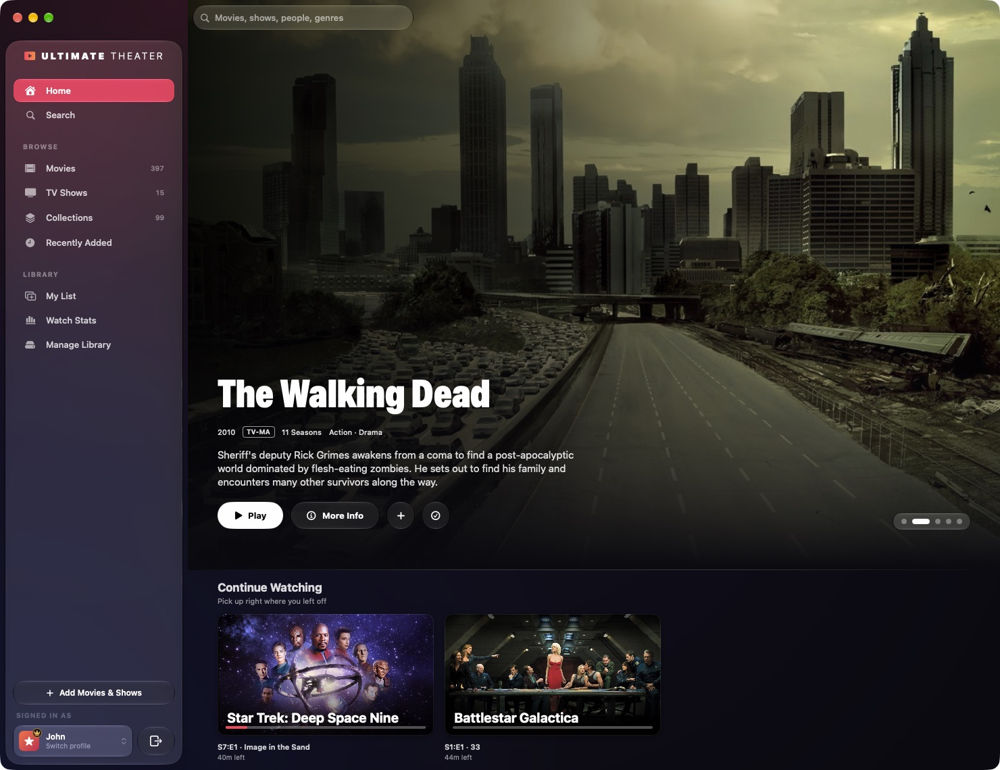
Every file plays in the Theater engine, written for Ultimate Theater on Apple's own media frameworks. You don't need codec packs, file conversions or a second app.
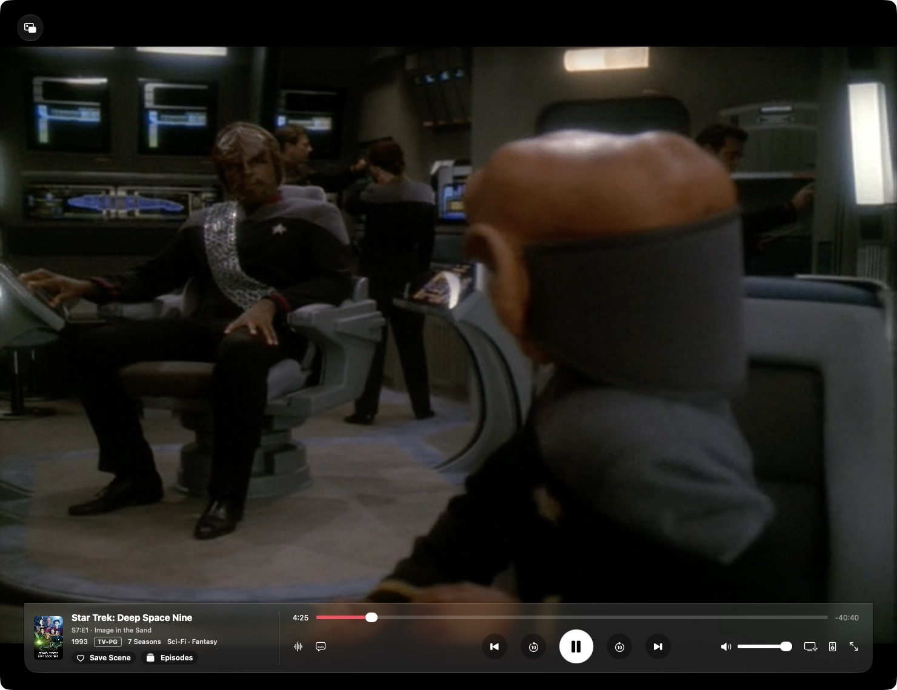
Finds missing indexes, cut-off endings and lost sync, and saves a repaired copy. Your original file is never changed.
Read by the app's own file readers.
HDR10, HLG and Dolby Vision included.
Lossless theater sound, decoded on your Mac.
Disc subtitles appear exactly where the disc puts them.
Add a folder and Ultimate Theater does the rest. It identifies every movie and episode, and brings in posters, cast lists, ratings, trailers and episode guides.
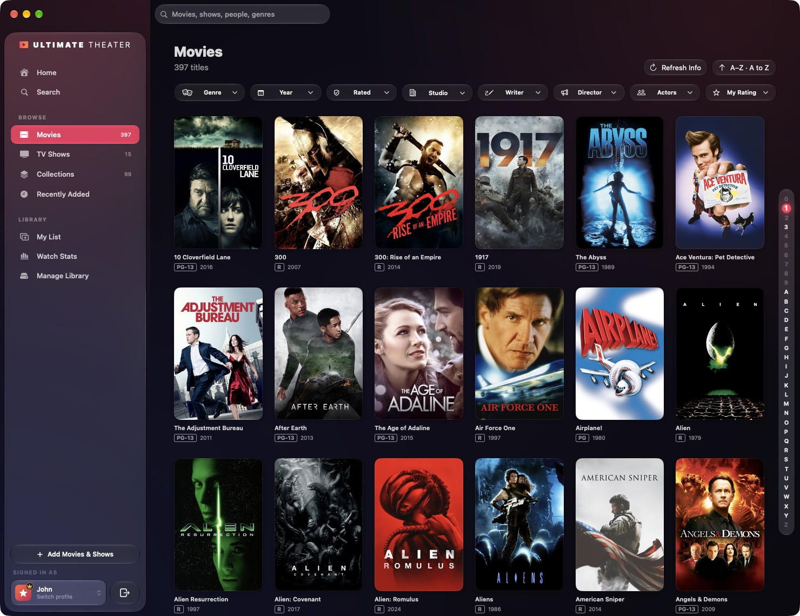
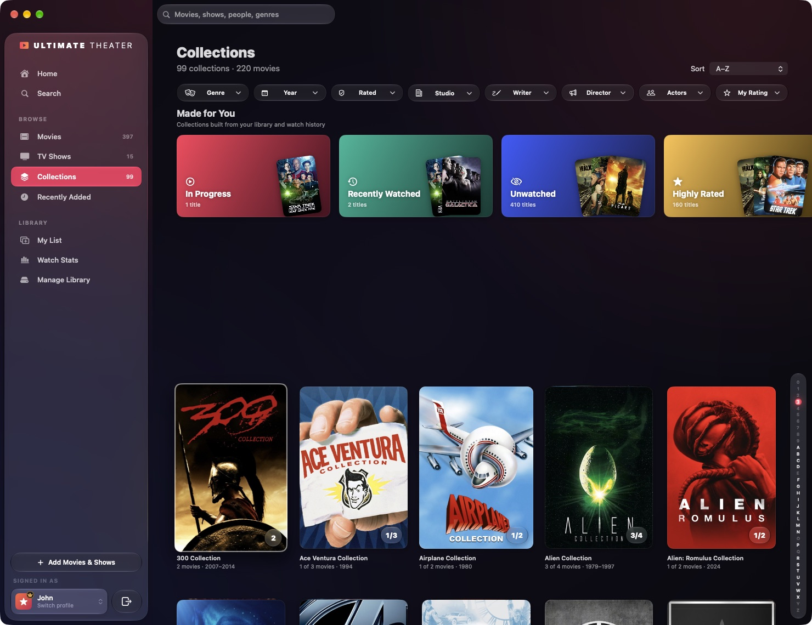
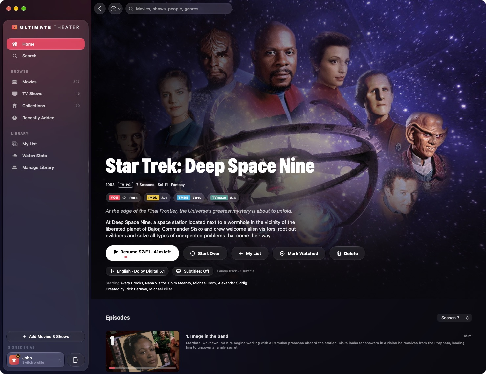
Information comes from TMDB, OMDb, TVmaze and Wikipedia: artwork, cast, synopses, trailers, and scores from IMDb, Rotten Tomatoes and Metacritic.
Movie series show what you have and what's missing. Smart collections cover In Progress, Recently Watched, Unwatched, Highly Rated and each decade.
New videos on your drives and network shares are found automatically and wait for the administrator to approve them. Rescan whenever you like.
Search movies, shows, people and genres. Sort by date added, A–Z, release date, top rated, or your own rating.
If a title is matched to the wrong movie, fix it in seconds. Edit any details, and lock them so a refresh doesn't undo your changes.
Resume or Start Over, My List, Mark Watched, trailers, your own star rating, and the audio and subtitle tracks you choose.
The controls sit in one glass bar and step aside while you watch. The intro and credits can be skipped, and the next episode is already lined up.
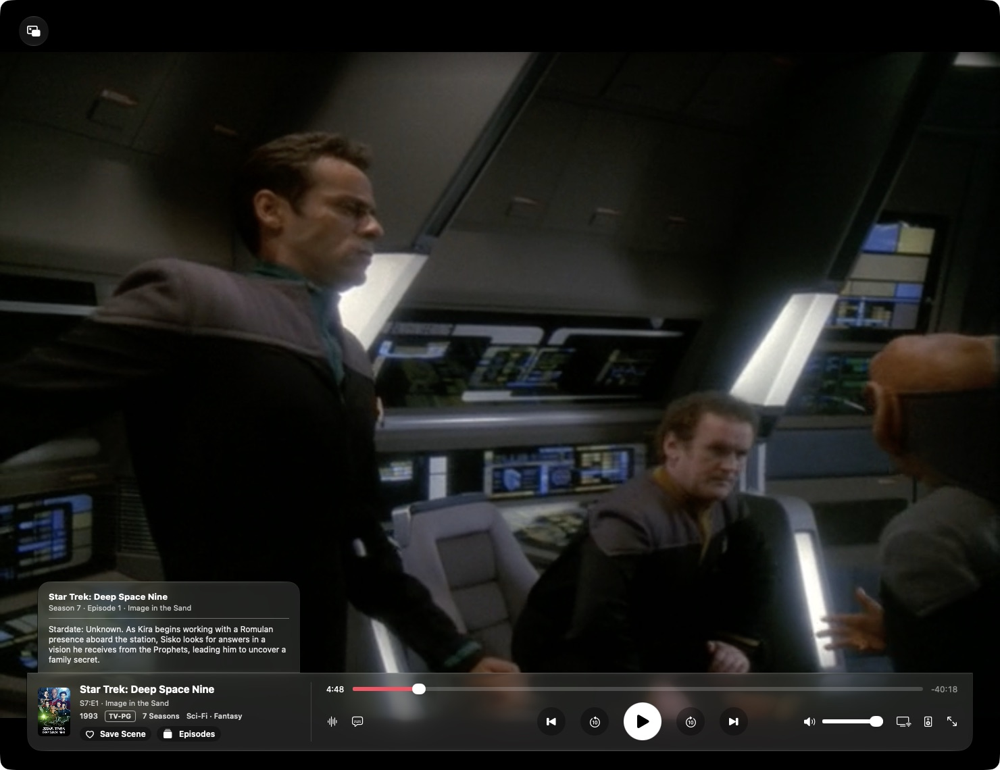
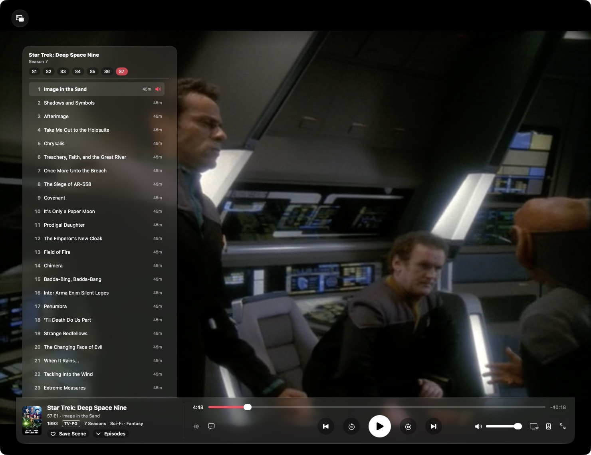
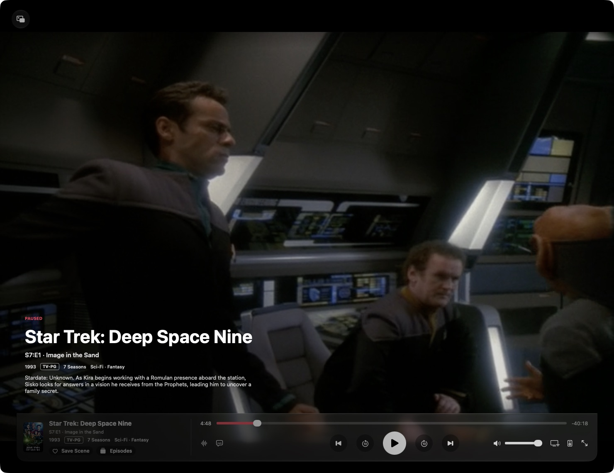
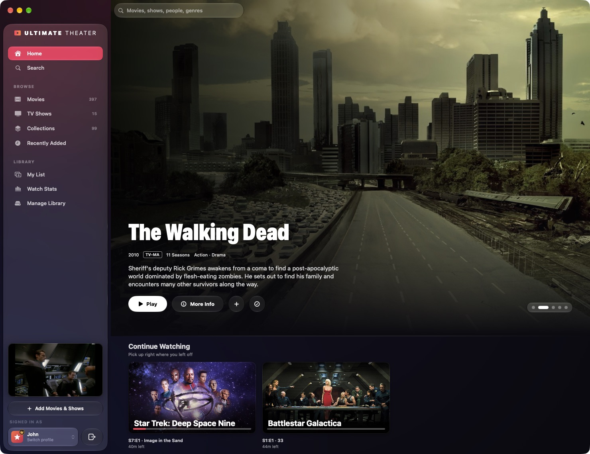
Intros and credits are found from chapter names, or by comparing each episode's sound with the episodes around it. Press S to skip.
The next episode starts after a 15-second countdown. After three episodes with nobody touching anything, the app asks "Are you still watching?"
Use the subtitles in the file or next to it, or find and download new ones from OpenSubtitles.com. Files that match yours exactly are marked.
Keep watching while you browse. When you minimize the window, the Dock icon shows the live picture, and the Dock menu has playback controls.
While a video plays, the display stays awake and the screen won't lock. Normal sleep comes back as soon as you pause.
Press B to save a moment, then play it again from the title's page. Media keys, Now Playing and keyboard shortcuts all work.
Each profile has its own My List, its own progress, its own ratings and its own Watch Stats. Content limits keep children's profiles to what they're allowed to watch.
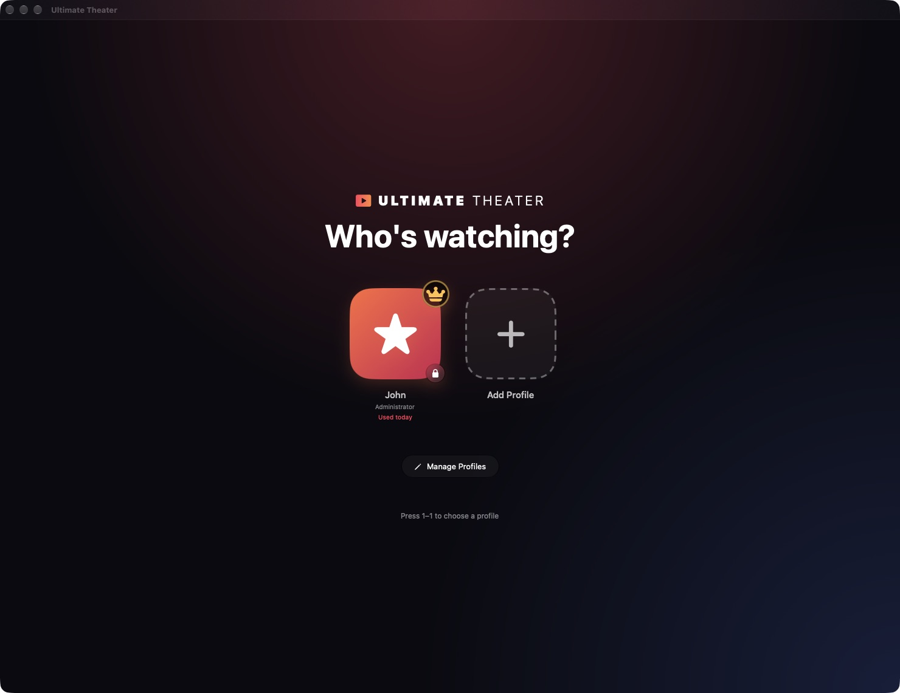
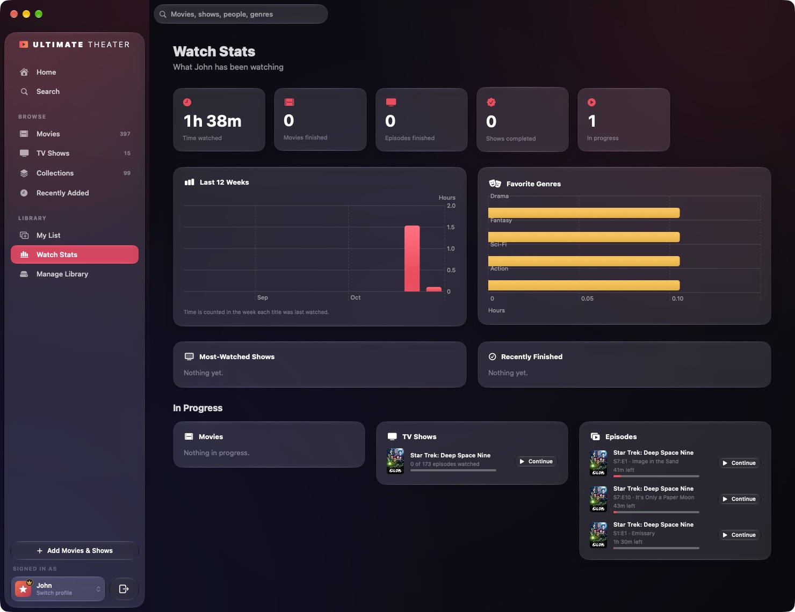
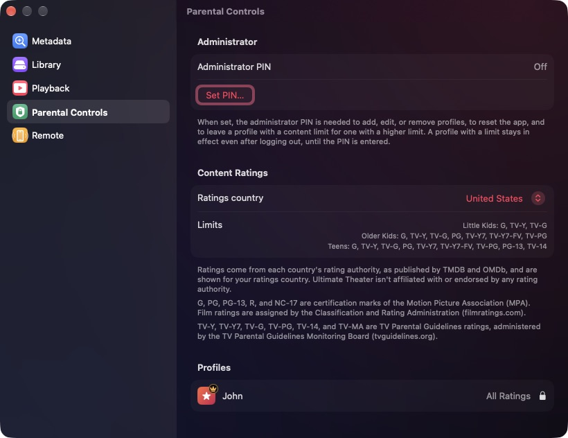
The administrator, marked with a gold crown, adds and approves media and manages the library. Everyone else just watches.
Lock any profile with its own PIN. The administrator PIN protects profiles and settings, and repeated wrong guesses lock the PIN pad for longer each time.
There are four limits: Little Kids, Older Kids, Teens and All Ratings. They follow your country's rating system, from MPA and TV ratings to BBFC, FSK and more.
Progress is saved for each profile, so everyone picks up where they left off. Mark titles, seasons or single episodes as watched with one click.
Movies finished, episodes and shows completed, hours watched each week, favourite genres, and the most-watched shows.
My List for what's next, half-star ratings of your own, and favourite scenes you can play again at any time.
Send what's playing to the TV. Each device is checked first, so you know whether it can play the file. Nothing is converted: the TV streams the original file straight from your Mac, through a private link that stops working when casting ends.
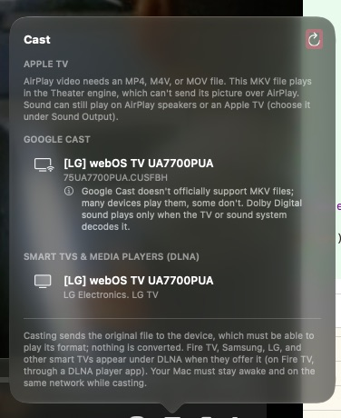
Video goes to an Apple TV for MP4 and MOV files with H.264 or HEVC. For every other file, the sound can still go to any AirPlay speaker.
Chromecast, Google TV, and TVs with Cast built in. Plays MP4, MOV and WebM files, and HEVC on newer models.
Most Samsung, LG, Sony, Panasonic and Philips TVs, Xbox, and many receivers, depending on the formats each one accepts.
Roku players and Roku TVs. Plays MP4, MOV and MKV files with H.264 video, and HEVC on 4K models.
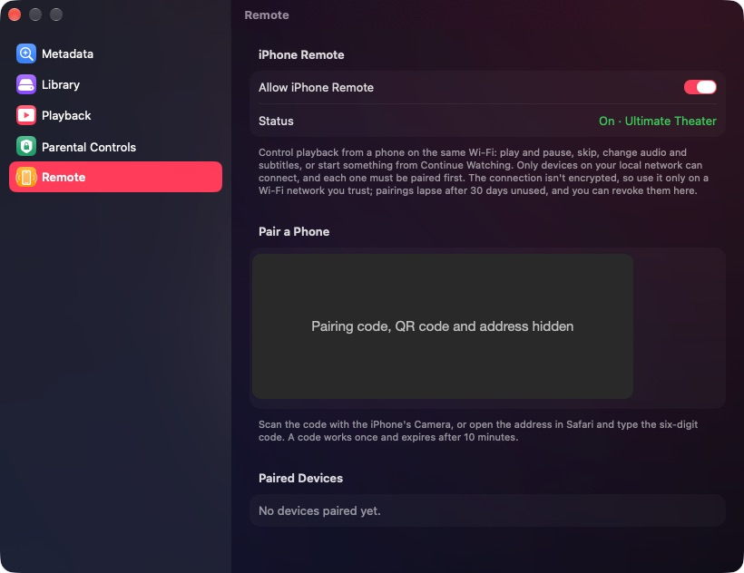
Pair a phone in seconds with a QR code. Then play and pause, skip, change audio and subtitles, or start something from Continue Watching. There's no app to install, and it works only on your Wi-Fi.
TVmaze: TV show and episode information from TVmaze, licensed under CC BY-SA 4.0. Wikipedia: synopses and images by Wikipedia contributors; text licensed under CC BY-SA 4.0, images under their own licences. OMDb: ratings from the OMDb API, whose terms allow personal, non-commercial use only. IMDb, Rotten Tomatoes and Metacritic are trademarks of their respective owners. OpenSubtitles: downloaded subtitles come from OpenSubtitles.com, are contributed by its community, and are subject to its terms of service; a free API key from the user is required. Trailers play from YouTube and Vimeo, and are subject to those services' terms.
Content ratings come from each country's rating authority, as published by TMDB and OMDb. Ultimate Theater isn't affiliated with or endorsed by any rating authority. G, PG, PG-13, R and NC-17 are certification marks of the Motion Picture Association (MPA); film ratings are assigned by the Classification and Rating Administration (filmratings.com). TV-Y, TV-Y7, TV-G, TV-PG, TV-14 and TV-MA are TV Parental Guidelines ratings, administered by the TV Parental Guidelines Monitoring Board (tvguidelines.org). Apple, Mac, macOS, AirPlay, Apple TV and iPhone are trademarks of Apple Inc.; Google Cast and Chromecast of Google LLC; Roku of Roku, Inc.; Dolby, Dolby Vision and Dolby TrueHD of Dolby Laboratories; DTS of DTS, Inc. Movie and TV artwork shown belongs to its respective rights holders. Ultimate Theater 1.0 is a development build.